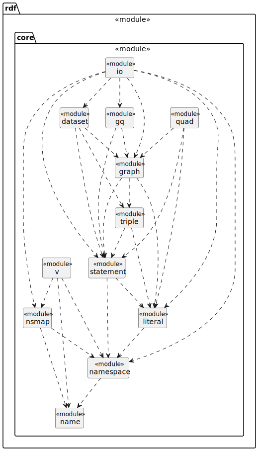
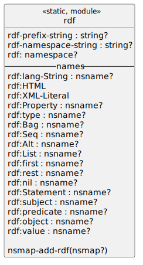

Racket RDF
Table of Contents
1. Introduction
1.1. Package core

Figure 2: Package rdf-core Overview
1.1.1. Module name
1.1.2. Module namespace
Figure 4: The rdf/core/namespace module
1.1.3. Module nsmap
1.1.4. Module literal
1.1.5. Module statement
1.1.6. Module triple
1.1.7. Module graph
1.1.8. Module quad
1.1.9. Module dataset
1.1.10. Module gq
1.1.11. Module io
1.1.12. Module v
Figure 5: The rdf/core/v modules

Figure 6: The rdf/core/v/rdf vocabulary module
1.2. Package dc